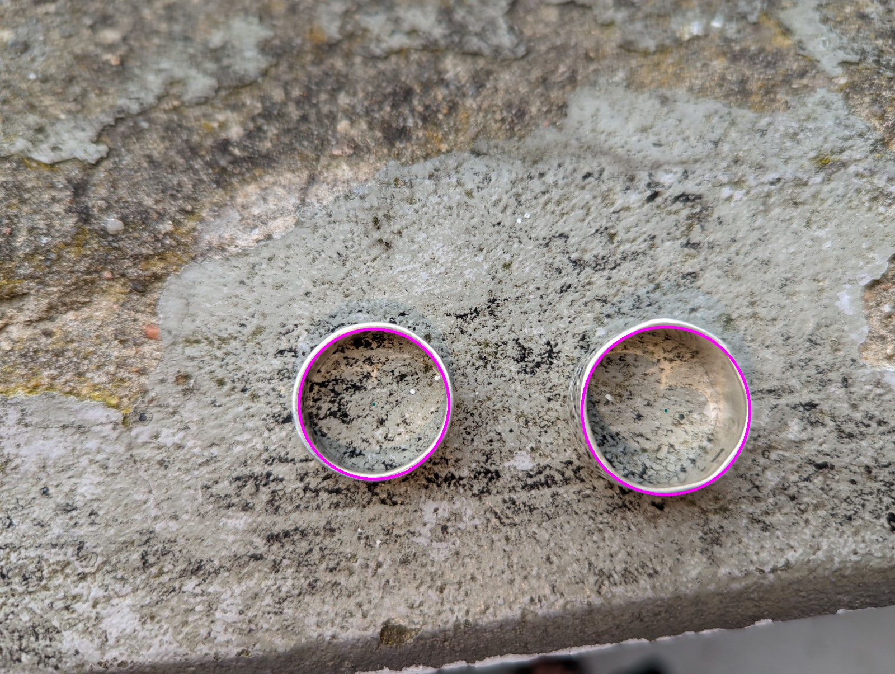
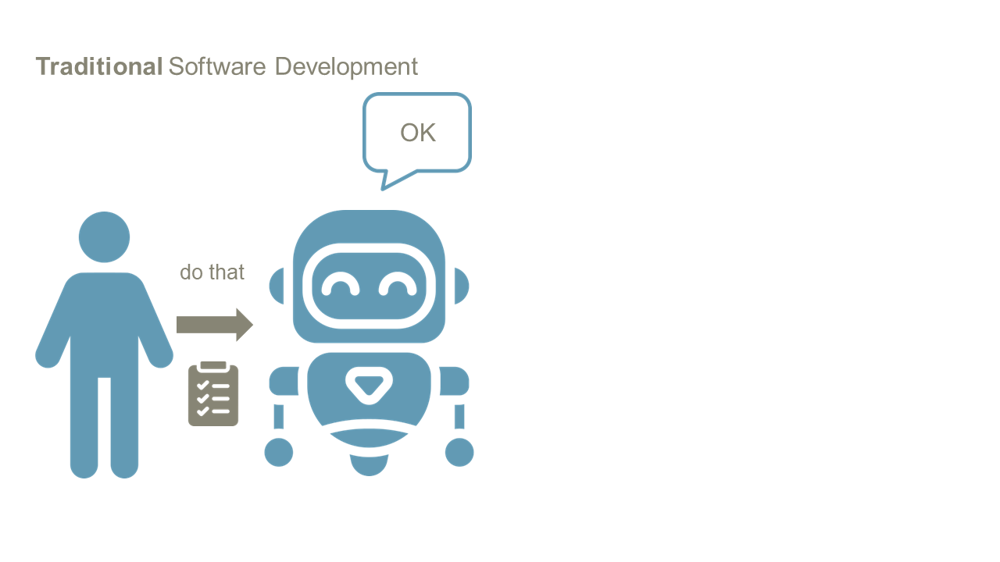
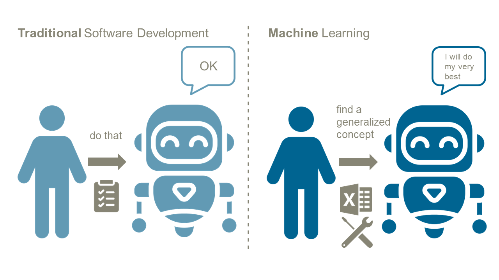
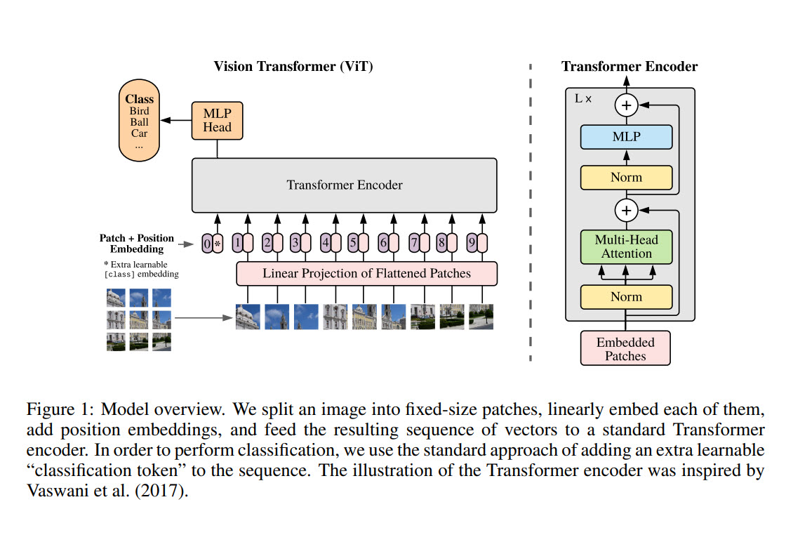

* Klicker * Handy Uhr * Buch-Verlosung, erste Frage von einem Deutschen Teilnehmer * Internet (Hotspot) * Demos laden - https://setosa.io/ev/image-kernels/ - https://transcranial.github.io/keras-js/#/mnist-cnn
### Doing Architecture is challenging * zu meiner Nachricht von gestern: ich glaube ich treffe den Punkt bei Architektur nicht, weil es häufig gar nicht um die Sachebene geht * eher darum: warum Architekturarbeit eine emotional anspruchsvolle Aufgabe ist und dass diese emotionale Resilienz (ist das ein Wort) kaum mit der technischen Fähigkeit zusammenfällt * das wäre aber ein ganz anderer Workshop und den würde ich auch nicht halten wollen
# Image Recognition: Past, Present and Future ### ML Conference, Munich, November 2023 https://mlconference.ai/machine-learning-advanced-development/image-recognition-past-present-and-future/ Oliver Zeigermann, OPEN KNOWLEDGE These slides: http://bit.ly/mlconf-2023-cv <!-- https://djcordhose.github.io/ml-resources/2023-mlconf-computer-vision.html -->
### Who is Olli <div style="display: flex;"> <div style="flex: 50%;"> <a href='https://oreilly.de/produkt/machine-learning-kurz-gut-2/'> <img src='img/ml-buch-v2.jpg' height="400"> </a> </div> <div style="flex: 50%; font-size: x-large;"> <img src='img/olli-opa.jpeg'> </div> </div> <p> <a target="_blank" href="mailto:oliver.zeigermann@openknowledge.de">Oliver Zeigermann</a>: ML Strategist@<a href='https://www.openknowledge.de/'>OPEN KNOWLEDGE</a> </p>
### Who are you? * What do you do? * What do you know already? * Why are you here?
Questions are welcome *at any time*
### Agenda 1. Past: Classic Computer Vision 1. Present: Deep Learning 1. Future: Transformers & Co
### Agenda 1. _Past: Classic Computer Vision_ 1. Present: Deep Learning 1. Future: Transformers & Co
### Example: How to distinguish these two types automatically? <img src="img/rings.jpg"> Same form, same material
## Feature Extraction ### Different Sizes * there are methods that can reliably detect circles * the best known method is the Hough transformation * by the size of the circles we could tell the difference
### The parameters are fiddly, but with a little experience you can do it ``` aperture = 21 # magic number img_gray_blur = cv.medianBlur(img_gray, ksize=aperture) threshold_canny_edge_detector = 100 # magic number threshold_circle_centers = 30 # magic number circles = cv.HoughCircles( image=img_gray_blur, method=cv.HOUGH_GRADIENT, dp=1, # ??? minDist=img_gray_blur.rows/8, param1=threshold_canny_edge_detector, param2=threshold_circle_centers, minRadius=0, maxRadius=0) ``` https://docs.opencv.org/4.x/d4/d70/tutorial_hough_circle.html
### Hough-Transformation  133 vs 150
### Under laboratory conditions this is doable * But: many "Magic Numbers" that are hand-tuned and fit to certain conditions * Objects with clear, preferably geometric shapes (e.g. circles) or composed of them * Constant background that clearly stands out from the object to be recognized * Constant light source * Constant brightness and color temperature * Constant camera with * Constant distance, angle and focal length * Possibly black and white * Generally constant environment when taking photos (no dust, sunlight, etc.)
### Python Tools for classic computer vision * OpenCV * https://docs.opencv.org/4.x/ * https://pypi.org/project/opencv-python/ * scikit-image * scientific image processing * https://scikit-image.org/ * https://scikit-image.org/docs/stable/auto_examples/index.html# * Pillow / PIL (Python Imaging Library) * rather general image processing * https://pillow.readthedocs.io * https://pillow.readthedocs.io/en/stable/handbook/overview.html * https://pillow.readthedocs.io/en/stable/about.html#what-about-pil
### Most important techniques of classic computer vision * Convolutions (Blur/Sobel/Sharpen): https://docs.opencv.org/4.x/d4/d13/tutorial_py_filtering.html * Edge-Detection: https://docs.opencv.org/4.x/da/d22/tutorial_py_canny.html * Morphological Operations (Opening/Closing): https://docs.opencv.org/4.x/d9/d61/tutorial_py_morphological_ops.html * Contours and Bounding Boxes: https://docs.opencv.org/4.x/d3/d05/tutorial_py_table_of_contents_contours.html * Segmentation: https://docs.opencv.org/4.x/d3/db4/tutorial_py_watershed.html * Template Matching: https://docs.opencv.org/4.x/d4/dc6/tutorial_py_template_matching.html * Back Projection: https://docs.opencv.org/4.x/da/d7f/tutorial_back_projection.html https://docs.opencv.org/4.x/d2/d96/tutorial_py_table_of_contents_imgproc.html
### But now... <img src="data/ring/stone-tilt-detection.jpg"> 114 vs 116
### Other environment and shadows <img src="data/ring/wama-tilt-detection.jpg"> 145 vs 151
### Oh dear...
## In little controlled or very variant scenarios you usually don't get very far with classical approaches Or at least not with classical approaches alone
### Varying patterns are hard for classical computer vision <img src="data/ring/hand.jpg">
### Agenda 1. Past: Classic Computer Vision 1. _Present: Deep Learning_ 1. Future: Transformers & Co
### Machine Learning 
### Machine Learning 
### AI vs Machine Learning vs Deep Learning <img src="img/AI.png">
### Machine learning on manual features We manually extract features and use them to train a classifier * We could extract a whole set of features from our images * The first could be circles * Edges, contours and segments are common as well * But we can also extract even more abstract features like the size of the ring * We encode these features numerically and send them into machine learning algorithms
### Image recognition with Deep Learning We also learn feature extraction * Deep Learning is a special form of Machine Learning * Neural networks with many layers * Dense layers can be efficiently implemented via matrix multiplications * Training via backpropagation * 3 layers with enough neurons and partial linear activation (ReLU) can be trained to approximate arbitrary functions * This means also theoretically they are trainable on any image recognition task
### But images are special * In pictures neighborhood of pixels has a meaning * Objects are connected to each other * Features in an object are translation invariant
### Special layers for image recognition Convolutional Neural Networks (CNNs) * we use our knowledge about images * an old acquaintance: Convolutions * convolutions have very few parameters, and are translation invariant * the same filter goes over all parts of the image * neural networks can learn arbitrary convolution kernels * if arranged sequentially, they can extract features of the image
### Understanding Convolutions <img src="img/setosa_io_image-kernels.png"> https://setosa.io/ev/image-kernels/
### Priors in training can help * The more *priors* you put in, * the *fewer samples* you require, but also * the greater the chance that the functions you need to learn are *not realizable* (or hard to learn) by your model. * So it's a good idea to put priors that you *know* are true, and simultaneously *minimize* the amount of priors you put in. * Using *convolutions* is good when your input data comes in the form of an array, with *strong local correlations* & location invariant statistics. * For this, making the *architecture translation invariant* will reduce the necessary amount of training data. https://twitter.com/ylecun/status/1591463668612730880
### Deep Learning with CNNs <img src="img/vgg.png"> _start with a set of convolutional blocks for feature extraction and ends with a classical classifier_
How do layers play together?
https://transcranial.github.io/keras-js/#/mnist-cnn
### Overview of Architectures <img src="img/image-recognition/cnn-architecture-overview.jpeg"> https://towardsdatascience.com/neural-network-architectures-156e5bad51ba https://arxiv.org/abs/1605.07678
### Libraries for Deep Learning * *PyTorch*: Top dog in academia * often has the first implementations of new ideas * *TensorFlow / Keras*: Top dog in industrial environment * Models pre-trained on Imagenet for direct use or transfer learning: https://keras.io/applications * Special building blocks for computer vision (augmentation, object detection, stable diffusion): https://keras.io/keras_cv/
### Agenda 1. Past: Classic Computer Vision 1. Present: Deep Learning 1. _Future: Transformers & Co_
### Image recognition can be done with a transformer (encoder)  <small style="margin-top: -40px; "> https://arxiv.org/abs/2010.11929 <br> https://huggingface.co/transformers/model_doc/vit.html</small>
### Transformers * Class of very large language models * Trained for generality * Mostly huge training data * Require (currently) too much compute to use them productively in a meaningful way * Distilled models and more compute pave the way to the productive world * Attention Layer is the most important component
### Transformer Architecture: Encoder/Decoder <div style="display: flex; align-items: center; justify-content: space-around;"> <div class="col"> <ul> <li>Left: Encoder</li> <li>Right: Decoder</li> <li>Encoder converts input to context-sensitive embeddings</li> <li>Decoder can operate on these embeddings, but always needs a left context to generate the output</li> <li>Encoder and decoder can work together or each as standalone</li> </ul> </div> <div> <img src='img/transformers/transformer-encoder-decoder.png' > </div> </div> <small> https://arxiv.org/pdf/1706.03762.pdf </small>
### Transformers need a different approach * need more data to train * you rather fine tune a pre-trained model * much harder for images than for text, because of the vast amount of data * MobileViT does not achieve results close to traditional CNNs when trained with the same effort https://keras.io/examples/vision/mobilevit/
### Summary 1. Past: Classic computer vision * Often sufficient in a controlled environment * Most of time at least useful for preprocessing 1. Present: Deep Learning * When high flexibility is required * Needs lots of data and lots of computing power, no training without GPU(s). 1. Future: Transformers and co. * Transformers offer a new approach, but models are (still) hardly practicable
# Thanks a lot ## Image Recognition: Past, Present and Future Stay in Contact https://www.linkedin.com/in/oliver-zeigermann-34989773/ oliver.zeigermann@openknowledge.de Twitter: @DJCordhose Slides: http://bit.ly/mlconf-2022-cv